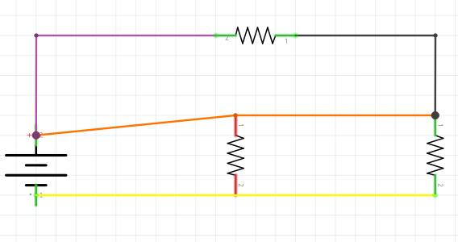
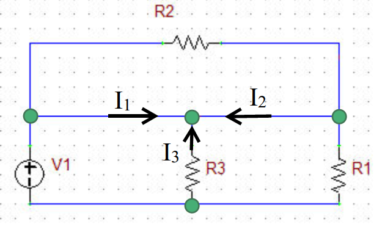
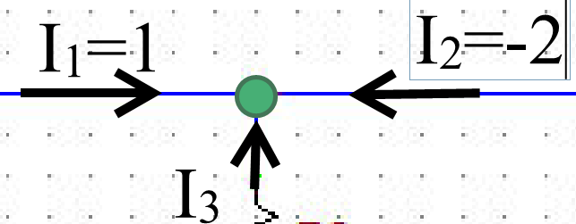
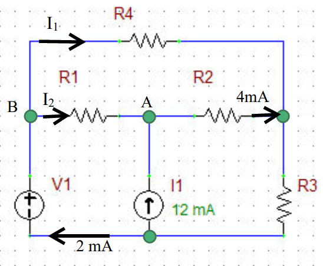

KVL and KCL
what is a node
A node is the area in a circuit between elements. Above is a circuit with the wires color coded so that each color is its own node. There are four nodes shown, try to pick out their colors.
representing nodes and currents
Here I am representing the same schematic in our usual format. However, I have added green circles to represent nodes. Currents are also being displayed with an arrow and the letter I.
KCL: Kirchhoff's current law
giving the example above some values, we can see three currents going "into" a node.
Kirchhoff's current law states that all the currents going into a node equal zero
in this case I1 + I2 + I3 = 0
Solution
plugging into I1 + I2 + I3 = 0
we get 1 + (-2) + I3 = 0
we easily find I3 = 1 Amp
note* since I2 is negative you might see the arrow turned away from the node
KCL question
looking at this example lets notice how the current source is represented with an arrow. In these examples you can assume a current source to mean the same as an arrow.
first lets look at node A. we see three currents interacting with the node. again in this case I1 + I2 + I3 = 0
Solution
plugging into I1 + I2 + I3 = 0
we get 1 + (-2) + I3 = 0
we easily find I3 = 1 Amp
note* since I2 is negative you might see the arrow turned away from the node
Not so fast
That was all fine and dandy with the magical arrows telling us all the currents we needed to know. What if we get a circuit with more unknowns?
first lets look at node A. we see three currents interacting with the node. again in this case I1 + I2 + I3 = 0